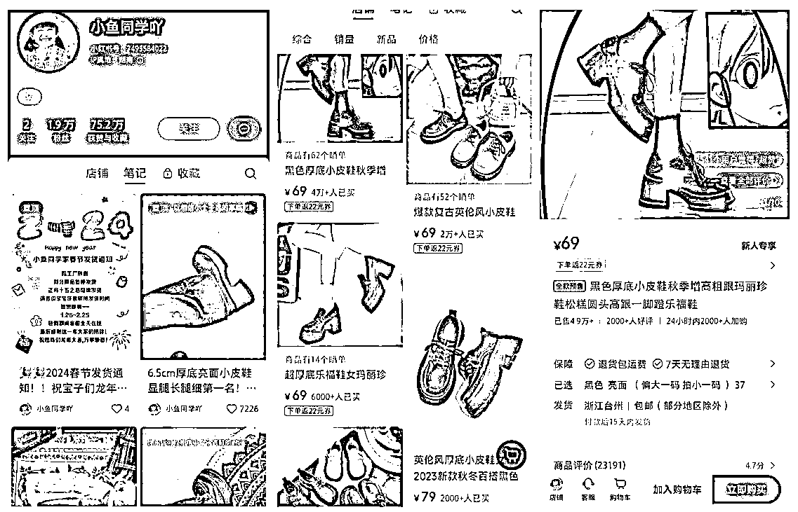
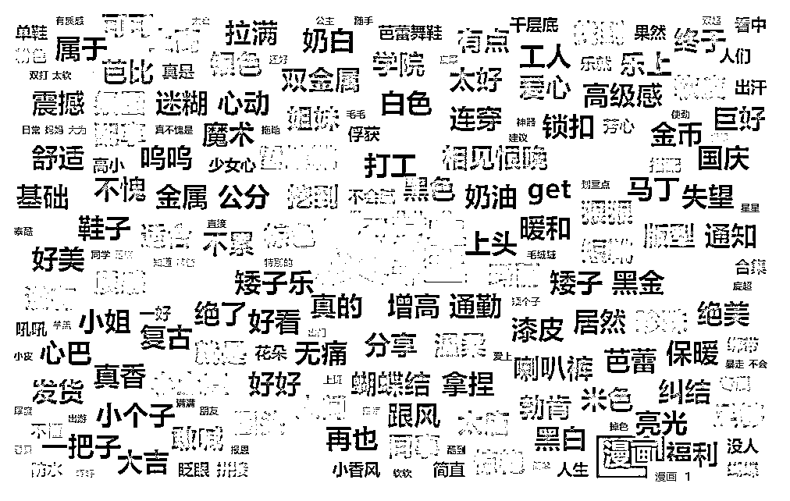
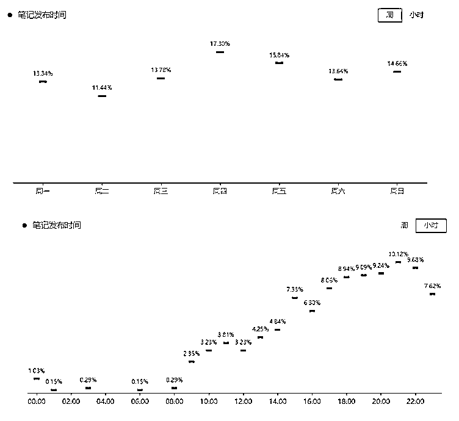
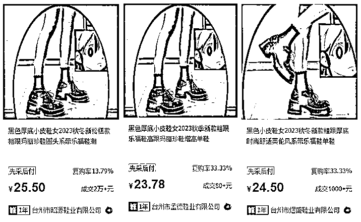
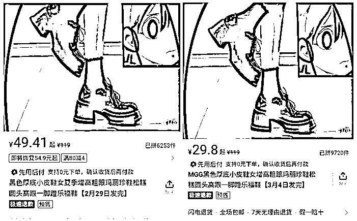
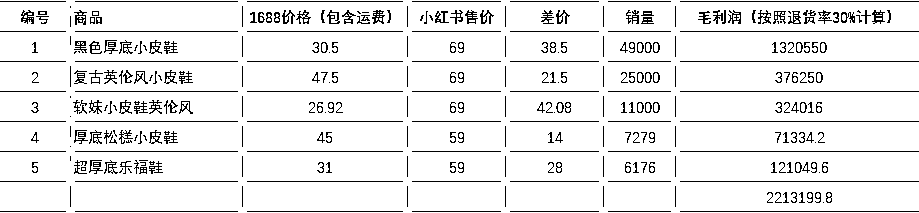
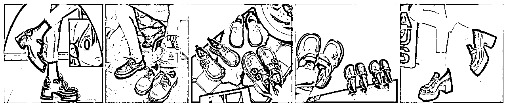

来源：https://uwc2n3yxpc.feishu.cn/docx/MvkkdMrgjoj4hkxGu8ncw4CpnTg
小红书爆款，售卖件数50W+的店铺到底是怎么赚钱的？
在小红书，我们经常能看到一条鲨鱼裤销量80w+，一件打底衫销量50w+，一家店只卖一个品，就能赚得盆满钵满。同时，也出现过“春节必备的20件一次性用品”的热点话题，靠卖百货卖出10w+的店铺。
那么，这种高爆款的那种店铺，都是怎么做起来的？
几十万销量的背后，靠的做矩阵铺货吗？还是邀请达人带货？还是图文+无人直播的模式？
本质上现在小红书各类的玩法也越来越成熟了，爆款店铺的背后，对于大家来说的机会可能是什么？
账号名称：小鱼同学咩的店
类目：女鞋
带货形式： 视频 （目前没有看到直播）



女性为主，占比97.1%
粉丝数TOP3：广东（10.40%）、山东（8.80%）、河南（8.80%）
主要年龄18-24岁|57.7%、25-34岁|28.6%
粉丝活跃最频繁的时间：10:00（15.30%）、11:00（13.70%）、12:00（11.90%）
以该店铺热销款为例，小红书店铺售价69元，已售4.9万件，发货地台州
1688同款1：25.50+5元运费，差价38.5元；
1688同款2：23.78+5元运费，差价40.22元；
1688同款3：24.50+5元运费，差价39.5元；

拼多多同款1：49.41，差价19.59元；
拼多多同款2：29.8，差价39.2元；

1）收益分析
该店铺总共上架55款产品，目前销量排名前5的产品利润如下表：
其他款产品销量千件以上有8款；500-100件的有5款；剩余100左右


2）成本分析
3）综合利润
产品太多没有全部记录价格和销量，先按照店铺排名前5的产品估算单店利润
固定投入：1000+69*55（样品购买）=4795元
总利润估算220w，账号运营11个月，平均每月19万
（不确定是否有广告费，人工费，或者其他隐形支出，有在开店并且盈利的大佬请帮忙看看是否计算正确）
百元内售价，实拍+不断测款+持续更新，定位某个细分群体，比如该账号定位学生党增高鞋；